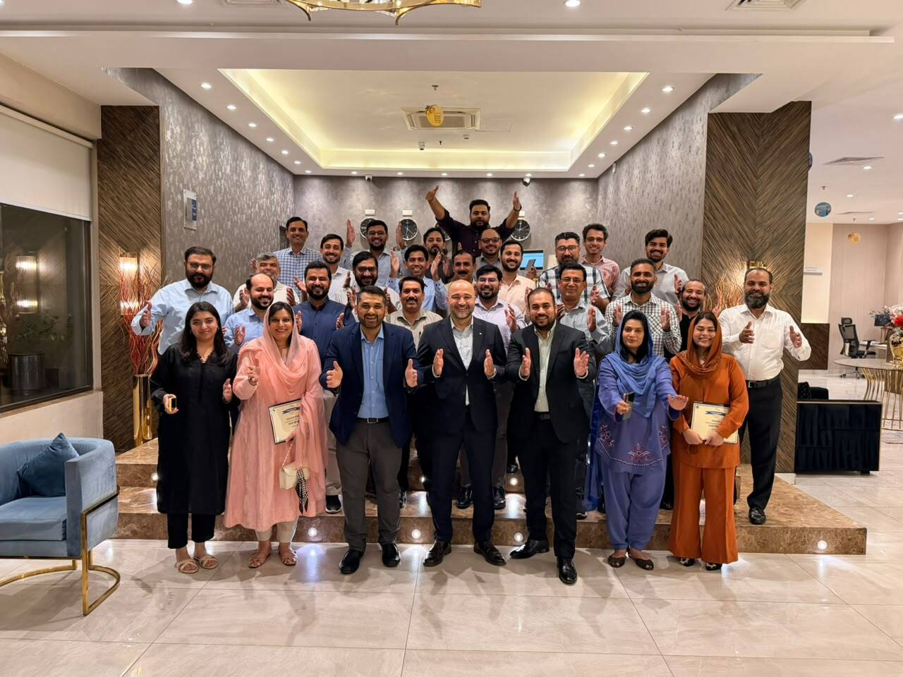
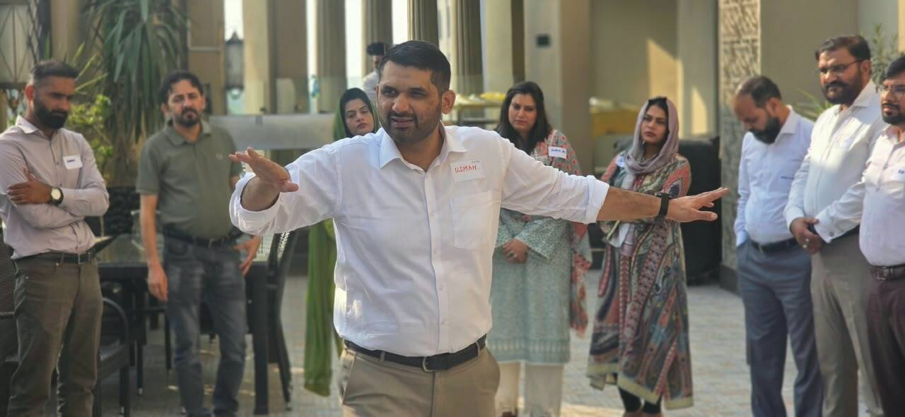

Blame instead of ownership
After: people take 100% responsibility for results and focus on what they can control.
Personal Leadership & Effective Management
A two-day workshop that gives your people the mindset and skill set to handle workplace challenges. Participants learn to take ownership, align their work with organisational goals, manage expectations, work through conflict and lead with purpose.

Teams we've worked with


After: people take 100% responsibility for results and focus on what they can control.
After: complaints become goals, and pressure is handled with a calmer, growth mindset.
After: work is prioritised and aligned with organisational goals, so the important things get done.
After: people listen to understand and communicate in a way that builds trust.
After: staff manage expectations, show their work and influence without authority.
After: disagreements are handled calmly, with common ground found on interests, not positions.
Tap any module to see what's covered.
The full program on personal leadership and effective management.
A frontline development program built on realistic workplace situations, role-plays and simulations.
"Learning cannot be enforced. Our job is to create an environment where participants choose to learn, grow and commit to transform themselves."Usman Gulzari
Tap a photo to see it larger.
Nadir Khusro GillaniChief Commercial Officer, Lucky Cement
Workshop highlightsInside a recent session
In the roomParticipants at work

Lead Trainer at The Missing P. Author of Wings to Fly, and named in Change Makers among the 33 most influential personalities.
Yes. We start with a short needs call and build the examples and role-plays around your team's real situations.
Two days (Reinvent Yourself) for officers, supervisors and managers. One day (Gear Up for Excellence) for frontline teams.
At your premises or a venue of your choice, anywhere in Pakistan.
A workshop manual and a certificate.
Tell us about your team, then pick a time for a short call.
Same setup as the Retreat page: team size, goals, timeline and your role, then the booking calendar.
Book a call →